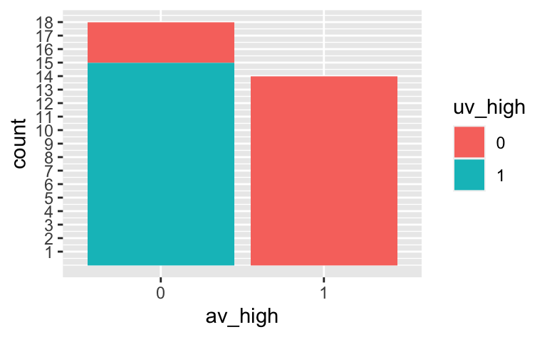

[1] "qsec"mtcars-abhaengig_var3
dyn
probability
num
mtcars
Aufgabe
Im Folgenden ist der Datensatz mtcars zu analysieren. Er ist unter dieser Quelle erhältlich.
Der Datensatz ist z.B. als CSV-Datei von dieser Webseite abrufbar.
Hilfe zum Datensatz ist via help("name_des_datensatzes") oder auf dieser Webseite abrufbar.
Ob die Variable qsec (UV; Ereignis \(A\)) und Spritverbrauch (mpg; AV; Ereignis \(B\)) wohl voneinander abhängig sind? Was meinen Sie? Was ist Ihre Einschätzung dazu? Vermutlich haben Sie ein (wenn vielleicht auch implizites) Vorab-Wissen zu dieser Frage. Lassen wir dieses Vorab-Wissen aber einmal außen vor und schauen uns rein Daten dazu an. Vereinfachen wir die Frage etwas, indem wir beide Variablen am Mittelwert aufteilen: Wenn eine Beobachtung (d.h. ein Auto) einen Wert in der jeweiligen Variablen höchstens so groß wie der Mittelwert der Variable aufweist, geben wir der Beobachtung der Wert 0, ansonsten den Wert 1.
Die resultierenden binären Variablen nennen wir av_high bzw. uv_high (im schönsten Denglisch).
Berechnen Sie: \(Pr(\neg \text{uvhigh} \, | \, \text{avhigh})\)
Hinweise:
- Das “Ellbogen-Zeichen” \(\neg\) kennzeichnet eine logische Negierung (das Gegenteil).
- Die angegebene Wahrscheinlichkeit ist eine bedingte Wahrscheinlichkeit.
- Weitere Hinweise
Lösung
Dieser Prädiktor wurde als UV bestimmt:
Schauen wir zuerst mal in den Datensatz:
d %>%
select(mpg, one_of(pred_chosen)) %>%
slice_head(n = 5)| mpg | qsec |
|---|---|
| 21.0 | 16.46 |
| 21.0 | 17.02 |
| 22.8 | 18.61 |
| 21.4 | 19.44 |
| 18.7 | 17.02 |
Dann berechnen wir die binären Variablen:
# split by mean:
d2 <-
d %>%
select(mpg, all_of(pred_chosen)) %>%
mutate(av_high = case_when(
mpg <= mean(mpg) ~ 0,
mpg > mean(mpg) ~ 1
)) %>%
select(-mpg)
# split at mean:
d2[1] <- ifelse(d[[pred_chosen]] < mean(d[[pred_chosen]]), 0, 1)
names(d2)[1] <- "uv_high"
# abstracted variables names:
pred_binary_name <- names(d2)[1]
av_binary_name <- names(d2)[2]Dann filtern wir die gesuchten Wahrscheinlichkeiten bzw. Anteile der AV:
d3 <-
d2 %>%
filter(av_high == 1)
av_high_sum <- nrow(d3)
av_high_sum[1] 14Es gibt also 14 Autos, die den oben gesuchten “hinteren Teil” der Bedingung erfüllen (av_high = TRUE).
Filtern wir als nächstes nach dem “vorderen Teil” der gesuchten Wahrscheinlichkeit (was das gleiche ist wie ein Anteil in diesem Fall):
d3a <-
d3 %>%
count(uv_high) Betrachten wir die nach av_high = TRUE gefilterte Häufigkeitstabelle:
| uv_high | n |
|---|---|
| 0 | 4 |
| 1 | 10 |
Und dann zählen wir die relativen Häufigkeiten der UV, und zwar für uv_high == FALSE:
prop_not_uv_high_cond_av_high <-
d3a %>%
mutate(prop = n / av_high_sum) %>%
filter(uv_high == 0) %>%
pull(prop)
sol <- prop_not_uv_high_cond_av_high
sol[1] 0.2857143Der gesuchte Wert beträgt also 0.2857143.
Visualisieren wir noch die bedingten Wahrscheinlichkeiten, so könnte man die gesuchten Anteile einfach abzählen:
d2 %>%
mutate(across(everything(), factor)) %>% # factor() brauchn wir nur für die Farbfüllung
ggplot() +
aes_string(x = av_binary_name, fill = pred_binary_name) +
geom_bar() +
scale_y_continuous(breaks = 1:100) +
scale_x_discrete(drop = FALSE) # zeigt Kategorien ohne Daten in der Legende an.
Sieht man in dem Diagramm nur eine Farbe (anstelle von zweien), so heißt das, dass es nur eine Gruppe gibt (und nicht zwei). Die Häufigkeit der nicht vorhandenen Gruppe ist demnach Null.
Am besten, Sie führen den letzten Code Schritt für Schritt aus und schauen sich jeweils das Ergebnis an, das hilft beim Verstehen.
Alternativ kann man sich die Häufigkeiten auch so ausgeben lassen:
av_high
uv_high 0 1
0 0.7222222 0.2857143
1 0.2777778 0.7142857Categories:
- dyn
- probability
- num